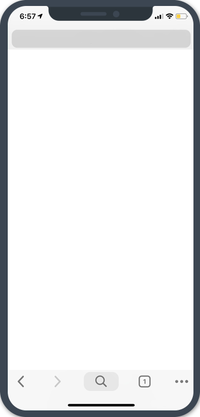

President
Leadership Experience
May 2020 − Present
MASA Rockets
May 2020 − Present
MASA Rockets
I serve as the President of MASA, Michigan's rocketry team, where I am responsible for leading the team to success in our competition to become the first student team to launch a liquid-bipropellant rocket to space. As President, my role is to be the outward face of MASA to its sponsors, competitors, and aerospace companies, and to deal with challenges that arise in the team's day-to-day operations.

Honors Capstone
Research Experience
Sept. 2020 − Aug. 2021
Composite Structures Lab
Sept. 2020 − Aug. 2021
Composite Structures Lab
Title: Finite element modelling of mixed-mode delamination propagation in Abaqus/Explicit with linear and non-linear cohesive softening laws
Abstract: Accurate modelling of delamination propagation in laminates is key to predicting the failure of composite structures. In this study, an implementation of the Cohesive Zone Model (CZM) using a novel mixed-mode formulation based on defining an effective separation and allowing for generalizable non-linear cohesive traction-separation softening laws, is presented and evaluated. To this end, several finite element models representing a laminate specimen under pure mode I, pure mode II, or mixed-mode conditions, respectively, are constructed and benchmarked against other studies from literature. Then, the influence of the cohesive softening law shapes on the load-displacement response of the specimen is evaluated. Results show that, with the appropriate softening law shape, the novel implementation successfully captures delamination growth and most load-displacement characteristics without the need for an empirical energy criterion.


Assistant in Research
Research Experience
Dec. 2019 − Aug. 2021
Composite Structures Lab
Dec. 2019 − Aug. 2021
Composite Structures Lab
As an undergraduate research assistant at the Michigan Composite Structures Lab, I have helped with experimental testing and data analysis of various carbon fiber-epoxy composite layup samples. For example, I prepared specimens, conducted tensile tests, and analyzed images from that testing to show the progresson of cracks in a specimen. I also conducted non-destructive ultrasound testing of specimens (see image) to show the internal progression of delamination.
Rocket Propellant Tank Development
Engineering Project
Sept. 2018 − Present
MASA Structures
Sept. 2018 − Present
MASA Structures
MASA is an interdisciplinary team working to send the first liquid bipropellant rocket to space. As a structures engineer, I am responsible for designing, testing, and manufacturing several components on our suborbital, 1100-lb rocket. These include the LOx/RP-1 flight tank endcaps with anti-vortex baffling and the intertank pulmbing bay structure. The process involves mass optimization through CAD, theoretical calculations, finite element analysis, and CFD simulations.
Business Operations Lead
Leadership Experience
May 2019 − Sept. 2020
MASA Rockets
May 2019 − Sept. 2020
MASA Rockets
I served as business lead for MASA, Michigan's rocketry team, where I was in charge of MASA's branding and external image and worked with suppliers and donors to ensure that MASA has the resources it needs to continue building rockets. As business lead, I founded a dedicated business subteam, created a new team website, revamped the team's branding, and more than doubled the number of organizations sponsoring the team. Overall, we were able to raise over $200k in monetary and material donations that year.

Design-build-test of R/C blimp prototype
Engineering Project
Sept. − Dec. 2019
Engr100-700, Aerospace Engineering
Sept. − Dec. 2019
Engr100-700, Aerospace Engineering
Along with a team of five people, I designed, built, and tested a flying radio-controlled airship designed for optimal speed and maneuverability. I led the design of avionics hardware and harnessing and led the trade studies for envelope selection. The process involved MATLAB simulations to achieve design optimization, subsystem development, vehicle integration, and piloting. Our airship won first place in speed trials at the Fall 2018 U-M Aerospace Day, while we were awarded 2nd place in college-wide Landes Prize for Technical Communication for our final report.
Cleanstart
New Tab Page & Bookmark Manager
HTML5 CSS3 JavaScript
HTML5 CSS3 JavaScript
Cleanstart is a simple new tab page & bookmark manager featuring beautiful wallpapers, intelligent search, and a weather widget. Search in a beautiful and clutter-free environment that puts your favorite search engines at your fingertips and use the intuitive bookmark manager to view and edit your bookmarks from the new tab page or from anywhere on the web.



MASA Rockets
HTML5 CSS3 JavaScript
This is the MASA website. It features a fully-responsive layout optimized for fast loading times and an information-rich design that showcases the team. The website automatically pulls from MASA's social media to populate videos and images on the website, and includes 360° photos, contact forms, photo galleries, member biographies, etc.

Tesson Laboratory
HTML5 CSS3 JavaScript PHP
This is the website of the Tesson Laboratory at the University of Ottawa. It features a simple, professional layout with subtle parralax effects and animations, multiple pages of information about the lab and its staff, and a Publications page which is auto-updated daily from the PubMed database.
 George M. Landes Prize for Technical Communication
George M. Landes Prize for Technical Communication